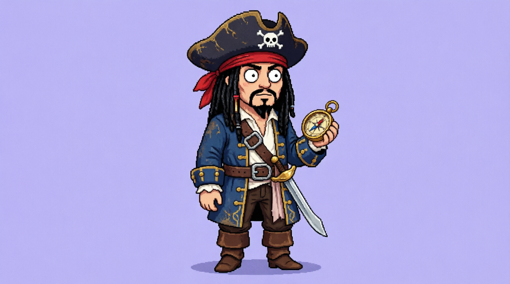
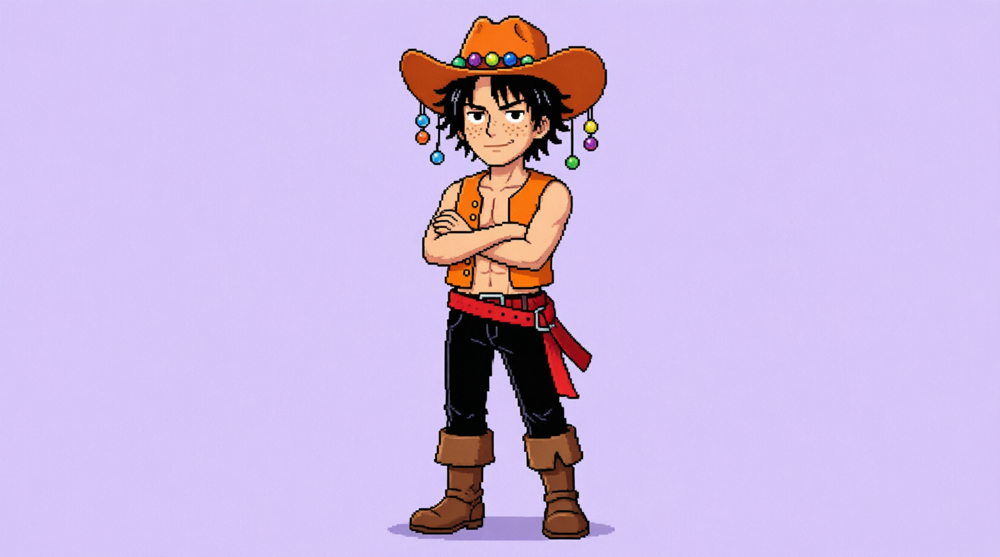
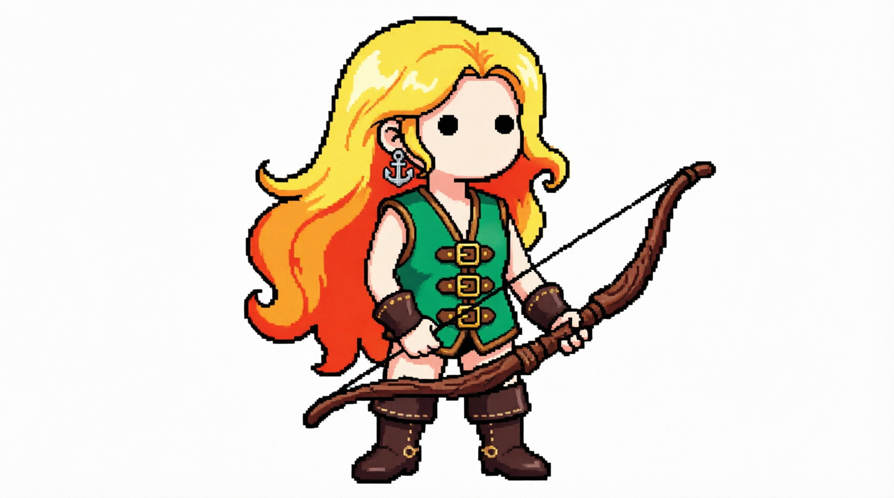
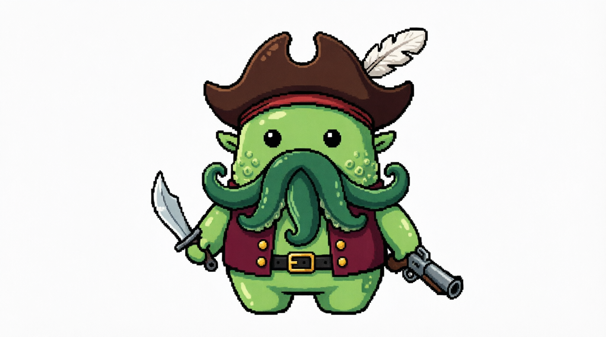
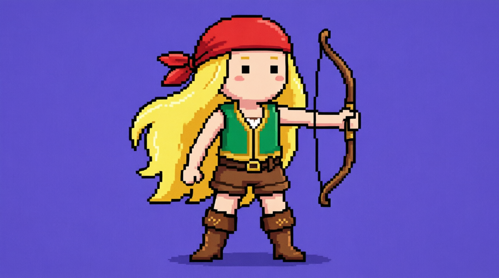
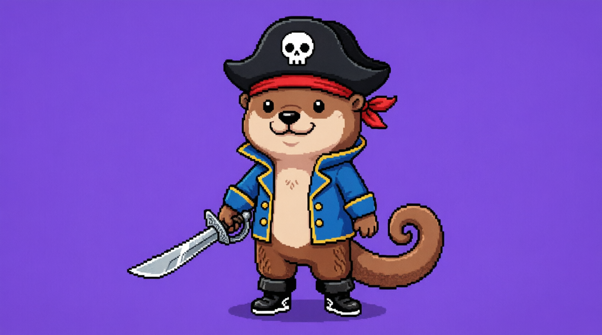
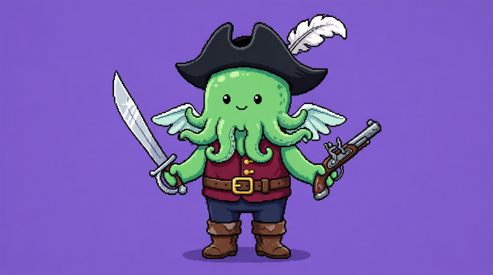
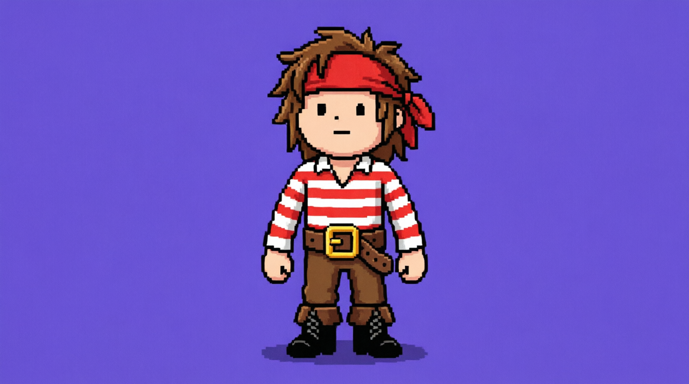
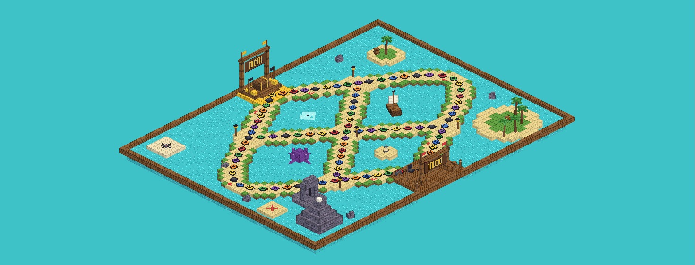

Jack S
Un capitán listo para orientarse y buscar el tesoro.
▶ PRÓXIMAMENTE · UNITY · 2-4 JUGADORES
Recorre el mapa del tesoro, roba los colores de tus rivales y arma el pixel art más rápido que nadie. Solo puede haber un pirata ganador.
Un tablero 3D, un dado y mucha picardía.
El dado indica el número de casillas a mover. Quien lo lanza es el jugador a vencer.
La casilla de color muestra la categoría a jugar. Mientras se juega, todos comparten el mismo color.
La categoria mostrara una figura. Dependiendo de la parte del mapa elige las tarjetas fáciles, medias o difíciles.
Tienes 1:30 min. Si quien tiene el turno no lo logra, pasa quien sí lo hizo a tiempo y este roba una ilera de píxeles. Si hay empate, el que tenga mejor pixel art gana. ¡Solo hay un ganador!
El jugador que logre llegar al final del tablero o logre dejar a los demas jugadores sin suficientes pixeles, gana.
Cada color del tablero esconde una categoría. 12 tarjetas por categoría en la versión completa, 6 en la demo.
Una cuadrícula de 25×25 y una imagen por construir. Cada color tiene su propio contador de píxeles y el reloj no perdona.
El mapa cambia contigo. Más caminos, más caos.
La dificultad es dependiendo en que zona del mapa estés.
El mapa se llena de atajos y bifurcaciones. Elige bien tu ruta.
Casillas falsas, tiempo límite y sorpresas escondidas en el camino.
Antes de zarpar, cada jugador podrá escoger el personaje que más le guste. Cada uno tiene su propio estilo para que puedas encontrar a tu favorito y reconocerlo durante la aventura. Estos son algunos de los personajes que podrás elegir:

Un capitán listo para orientarse y buscar el tesoro.

Un explorador con ganas de lanzarse a cualquier desafío.

Una navegante hábil que siempre está lista para apuntar a su objetivo.

Un personaje misterioso con un estilo difícil de olvidar.

Una aventurera preparada para abrirse camino en el mapa.

Un compañero fuerte y simpático para esta travesía.

Un pirata de nueve tentáculos listo para la aventura.

Un marinero clásico que se suma a la búsqueda del tesoro.
El mapa será el tablero donde la tripulación avance en busca del tesoro. Sus casillas de colores conectarán la aventura con las categorías y los retos de píxeles. Aquí podrás descubrir sus caminos y detalles cuando el diseño esté terminado.

Únete a la tripulación y entérate del lanzamiento.